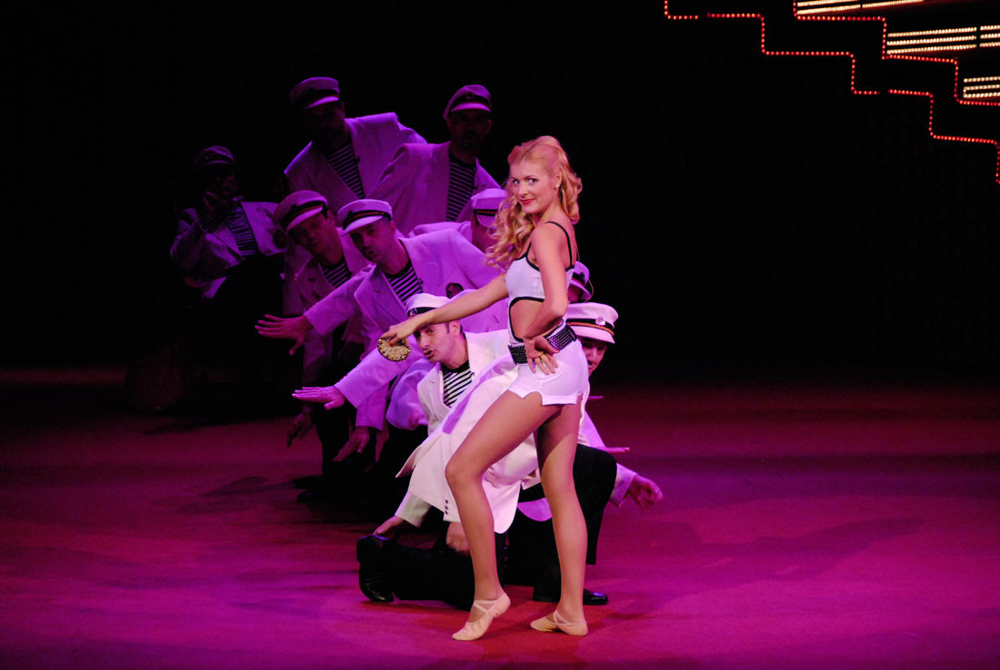
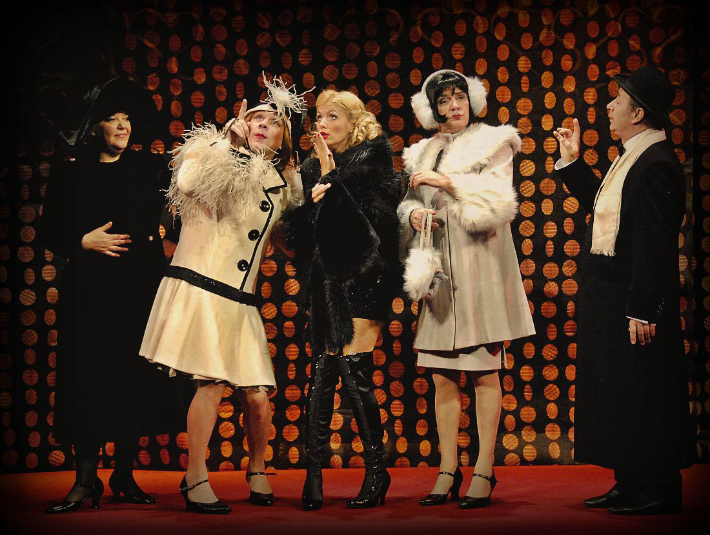
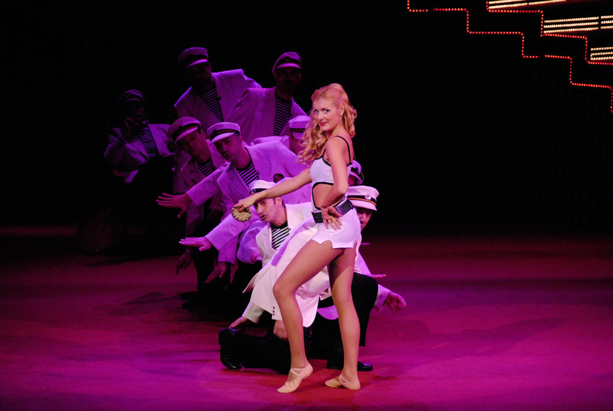
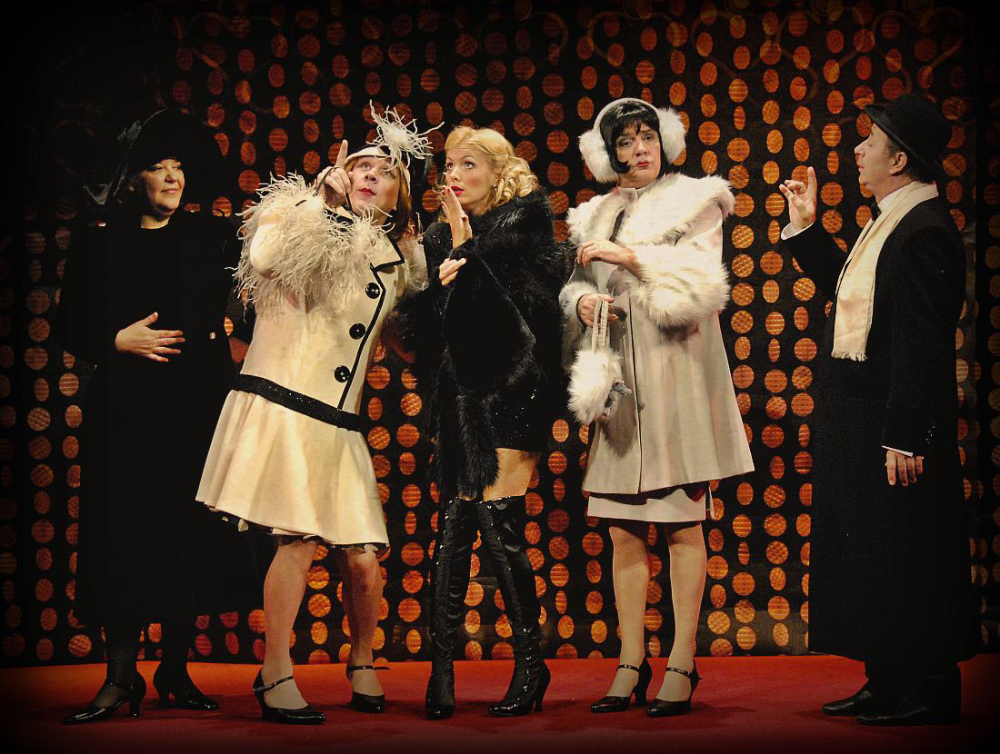

Неки то воле вруће
За ову, најдуже играну представу на репертоару Позоришта на Теразијама, главни ”кривац” је, разуме се, њен редитељ, Соја Јовановић, која је имала смелости и велемајсторског умећа да се након истоименог филмског хита и Бродвеја, успешно упусти у реализацију ”Неки то воле вруће” и на домаћој сцени.
У причи о двојици музичара који се, зарад посла, преоблаче у жене, о плавуши из бајке што сања ”милионера”, и о стварном милионеру који се заљубљује у мушкарца, испричана је, заправо, прича о тријумфу љубави и лепоте. Најбоља потпора том холивудском ”сижеу” јесу гламурозна сценографија и костим, одлични музички аранжмани и кореографија, те истанчан осећај за комику протагониста комада.
Пуслица(Мјузикл)
Бродвејски мјузикл Пуслица, изведен 1972 године, заснива се на сценарију за филм Неки то воле вруће, који су написали Били Вајлдер и И. А. Л. Дајмонд, а према оригиналној причи Роберта Торена. Либрето за Пуслицу написао је Питер Стоун, музику Џул Стајн, а сонгове Боб Мерил. Ликове два музичара без посла, Џерија и Џоа, сведока гангстерског масакра у Чикагу, на Дан Светог Валентина, заиграли су Роберт Морс и Тони Робертс, док се у насловној улози на бродвејској сцени представила Елејн Џојс. Кореографију и режију потписао је Гауер Чемпион, док је продуцент био Дејвид Мерик. Премијера је одржана на Бродвеју, 9. априла 1972. године у ”Мажестик Театру”, а играна је 505 пута! Пуслица је била је номинована за четири награде ”Тони”: за најбољи мјузикл, најбољу кореографију у мјузиклу, за најбољу режију мјузикла, и за најбољег глумца у мјузиклу (Robert Mors) – али, није добила ни једну од њих. Морс је добио Drama Desk Award за своје изузетно остварење у улози Џерија, док је Елејн Џојс за улогу Пуслице примила престижну Theatre World Award.Соја Јовановић
Соја Јовановић је посебним нитима била везана за Позориште на Теразијама. У нашој кући је од 1961. па до 1999. година режирала 11 представа, за које је публика низ година тражила карту више:Лов на гавранове, водвиљ Ежена Лабиша (30. јануара 1961.), Доживљаји Вука Бубала, комедија према прози Бранка Ћопића, (29. априла 1962.), Карневал, мјузикл Мајкла Стјуарта, Боба Мерила и Ико Отрина (15. децембра 1966.), Женске разговоре, оперету Душана Радовића и Војкана Борисављевића (15. марта 1973.), водвиљ Везана Врећа, Жоржа Фејдоа (28. јануара 1980.), мјузикл Мој дечко, Сенди Вилсона и Лидије Пилипенко (24. октобра 1984.), Волим своју жену, мјузикл Мајкла Стјуарта, Саја Колмена и Лидије Пилипенко (26. септембра 1986.), Позив у дворац, комедију Жана Ануја (6. новембра 1988.), мјузикл Неки то воле вруће, Питера Стоуна и Боба Мерила, Џула Стајна и Миљенка Штамбука (27. децембра 1990.), Кабаре, мјузикл Џоа Мастерофа и Фреда Еба, Џона Кандера и Љиљане Дуловић, Снежане Тодоровић и, најзад, водвиљ Жоржа Фејдоа, Умрла је госпођа мајка госпођина (26. новембра 1999.).
Посебно место у сарадњи Соје Јовановић са Позориштем на Теразијама, несумњиво, заузима мјузикл Неки то воле вруће. Била је то последња премијера на ”теразијској сцени” – након које почиње четрнаестогодишње ”изгнанство” у Дому културе ”Вук Караџић”.
И зато, обнова мјузикла Неки то воле вруће, коју су према оригиналној редитељској поставци Соје Јовановић (овога пута, поново на нашој ”теразијској сцени”) реализовали Раде Марјановић и Светислав Гонцић – заправо је метафорички лук који спаја прошлост, садашњост и будућност нашег Позоришта. Парабола исцртана у славу уметности, креативности људског духа и неуништиве воље за трајањем. Соја Јовановић је то знала и Соја је у томе умела да нам помогне.
 


